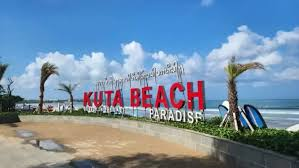
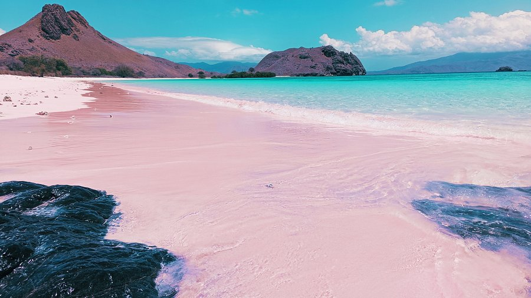
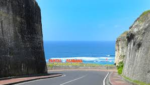
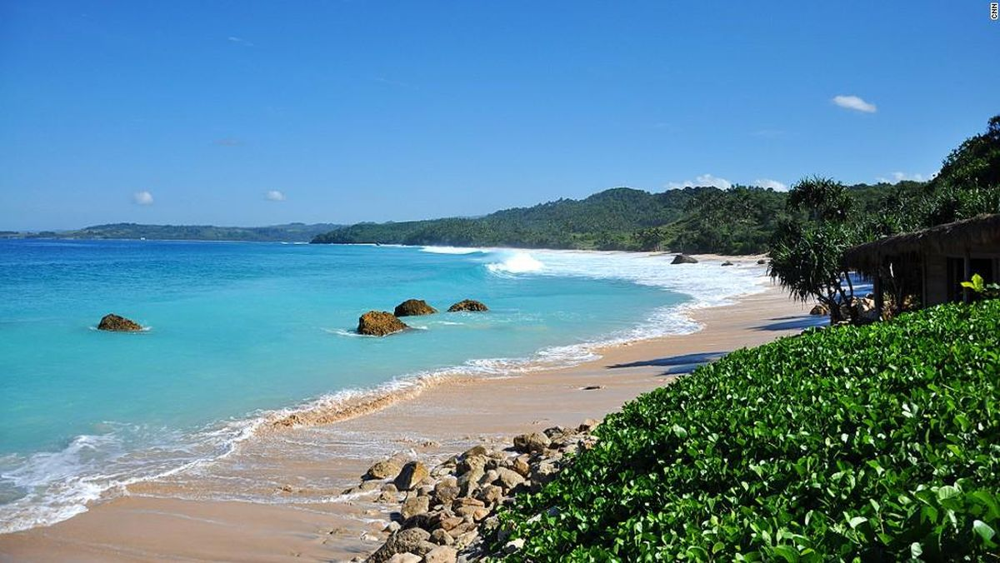
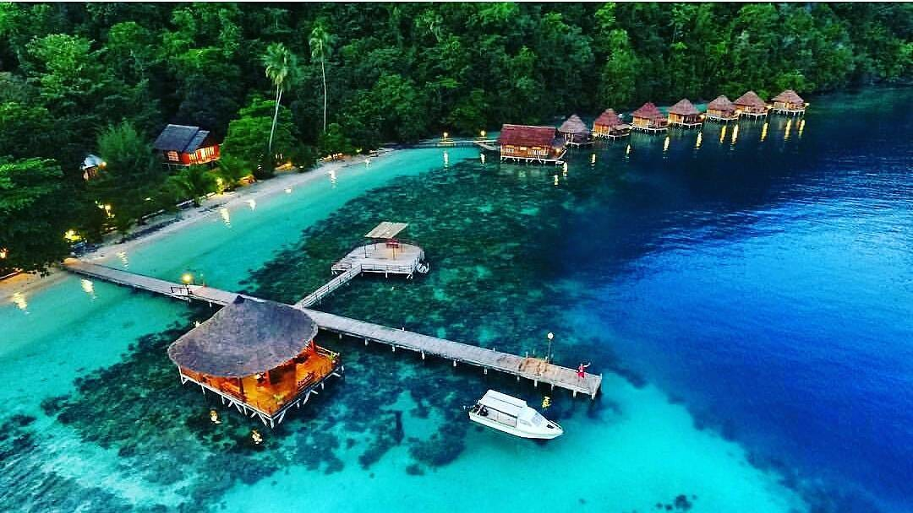
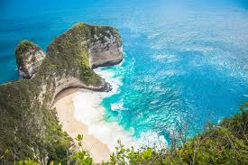

Pantai Kuta
Kecamatan Kuta, Kabupaten Badung, Bali.
Pantai ikonik di Pulau Dewata ini berada di sisi barat daya semenanjung selatan Bali.

Pantai Pink (Pink Beach)
Taman Nasional Komodo, Labuan Bajo, Nusa Tenggara Timur (NTT).
Perpaduan pasir putih dengan serpihan karang merah

Pantai Parangtritis
Kabupaten Bantul, Yogyakarta.
Pantai yang terkenal dengan pasir putihnya dan pemandangan alam yang indah.

Pantai Pandawa
Kabupaten Badung, Bali.
Pantai yang terkenal dengan pemandangan alam yang indah dan udara yang sejuk.

Pantai Nihiwatu
Sumba Barat, NTT.
Menjadi incaran para peselancar dunia karena memiliki salah satu ombak tercepat dan terbaik di dunia.

Pantai Ora
Maluku Tengah, Maluku.
Pantai yang terkenal dengan pemandangan alam yang indah dan keanekaragaman hayati yang tinggi.

Pantai Kelingking
Nusa Penida, Bali
Daya tarik utamanya meliputi panorama samudra luas dan hamparan pasir putih.